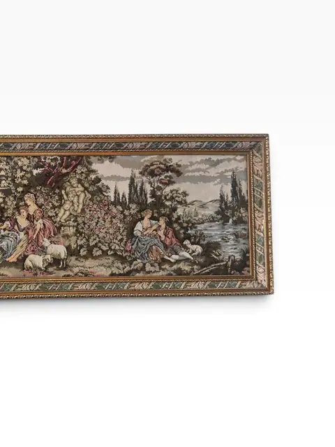
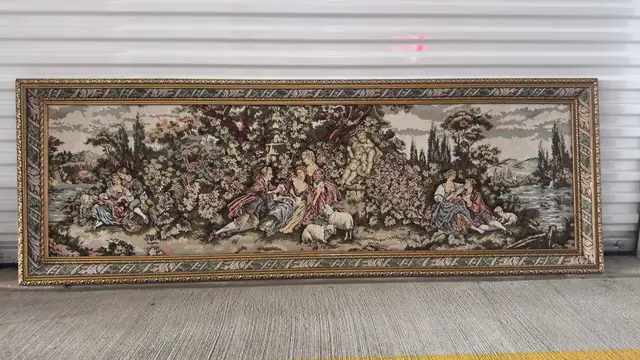
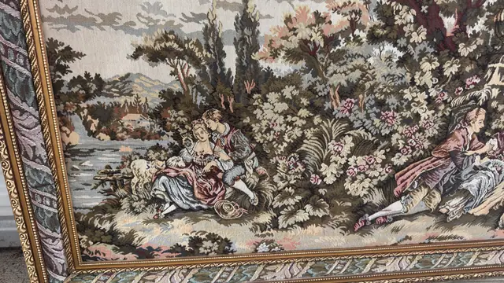
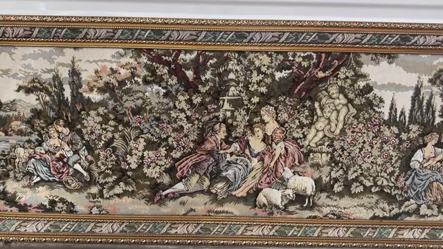
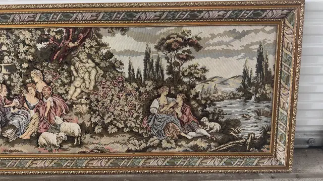
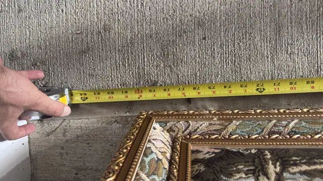
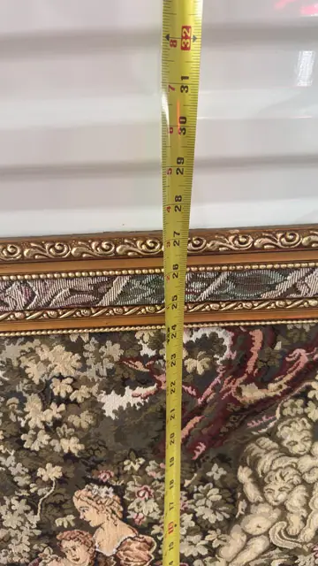

Persian Rug
Framed Pastoral Tapestry — Rococo Garden Scene, Gilt Frame
· 20th century
Price Upon Request









About the Item
A grand woven tapestry in the French pastoral tradition, depicting 18th-century style garden gatherings with courting couples, sheep and classical statuary amid lush foliage. Presented in an ornate giltwood frame, it lends old-world grandeur to a dining room or salon. Dimensions: 213 x 81 cm (84 x 32 in) Dimensions read from tape-measure photos: 84 in wide at the left frame edge (tape zero at right edge) and 32 in tall at the top frame edge (tape zero at bottom edge); both tape hooks were off-frame, positions inferred per standard measuring practice. Machine-woven reproduction tapestry, 20th century, after 18th-century French pastoral designs.
Details
- Creation Year:
- 20th century
- Medium:
- Woven tapestry
- Period:
- 20Th
- Condition:
- Offered in the condition shown in the photographs.
- Reference Number:
- VO-292